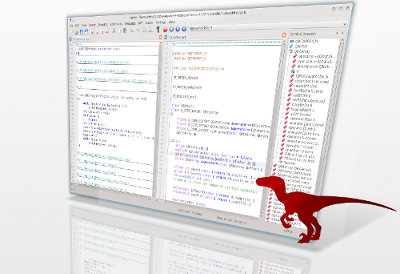

Automatically exported from code.google.com/p/raptor
raptor (ˈræptə) — n carnivorous bipedal dinosaur of the late Cretaceous period

raptor is a source code editor supporting several languages. It is largely inspired by Notepad++ editor but has the advantage of being portable, running on windows,linux and mac os. (more screenshot here)
The project is still in the development phase, however, it's usable and already has some nice features...
I hope you enjoy Raptor as much as I enjoy coding it.
See the wiki pages for more information about raptor ...
All contributions are welcome. The easiest way to contribute may be to spread the word, to make people aware of raptor.
Contributions that require more technical knowledge may range from issuing bug reports and suggesting features, to doing testing, to contributing code. Read more here